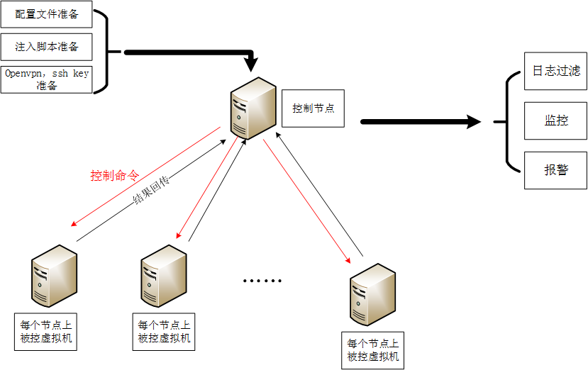
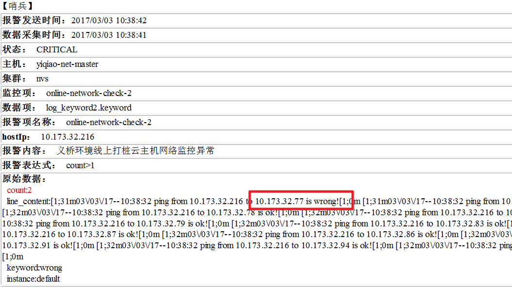
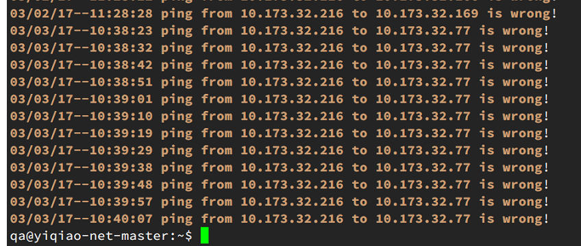
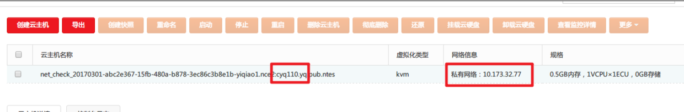
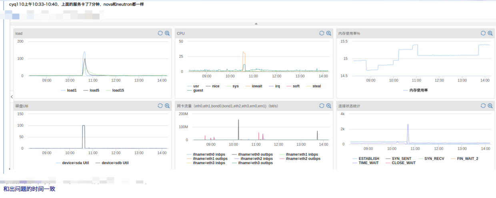

云计算保障系统SLA之线上打桩
Contents
云计算一个难点在于保障系统的高可用，当在发生故障的时候，能够尽快的恢复（参考最近的gitlab和亚马逊s3故障教训），工程师是在和时间作斗争。监控和报警是工作的重中之重。一般来说，我们肯定会做好宿主机层面和服务层面的监控报警，否则系统形如裸奔。
然而，某些场景中，宿主机和服务运行正常，但是上面的虚拟机被异常关机或者重启，抑或网络连通性出现问题（包括私有网，外网，以及不带外网的情况下通过L3访问外网等），上述情况下现有的监控覆盖不到，不能及时发现问题；另外，每次线上更新主机和网络的服务，需要观察升级对已有云主机的影响。基于上述问题，从用户角度出发，有了这个线上打桩监控的方案，切实提升系统可用性和服务SLA。
##背景 由于目前的环境部署中，部分线上以及线下环境存在较大的配置和环境差异，导致部分问题线下测试中不存在，无法提前发现，但是上线以后却会对线上的业务运行造成影响；
为了可以更好的进行线上环境升级过程中虚拟机网络连通性，以及升级以后的业务正确性检查，考虑通过线上预埋部分打桩虚拟机，并在虚拟机内部部署自动化测试脚本的方式来实现；在发现问题以后，可以通过邮件或IM报警的方式及时进行日志推送，及时发现问题和风险，更好的保障线上的稳定性和对外版本质量。
##实现思路概述
线上所有节点部署一台虚拟机，虚拟机内部部署测试工具进行线上业务的网络监控，主要实现的功能包括： 1）同用户私有网互联，所有节点之间，虚拟机的私有网采用固定ip的形式 2）机房网互连，部分节点间进行，包括同用户和跨用户均包含（跨租户主要进行acl的功能检查） 3）私有网访问外网连通性/dns解析功能，部分节点中的部分虚拟机（dns-server功能验证、L3功能检查） 4）外网访问外网连通性/dns解析功能，部分节点中的部分虚拟机（外网检查、dns-server功能验证） 5）公共服务访问/优先路由验证（虚拟机路由推送功能验证）
其中，网络连通性方面通过ping进行检查，时间间隔为0.2s，结果方式采用如下的形式进行记录： [date] [src_ip] [dst_ip] [state] 例如：07/14/15—15:39:43 10.180.164.230 10.180.164.231 ok
网络方面无异常出现的情况不做任何推送操作，仅打印日志记录；在网络出现异常后，打印日志，同时通过IM或邮件的形式进行实施告警推送。
此部分为了应对一些维护场景导致的网络异常出现，实现中可配置业务开关来设置是否推送告警，如确定为维护操作或其他已知人为操作导致的异常，可关闭开关停止告警；并且可以在业务恢复后打开开发继续进行监控。
由于实现中，需要在每个节点进行虚拟机的预埋，所以会占用部分线上的资源，使用中会选取最小的规格（1v1e,512M内存）来进行验证，尽量少的占用系统资源。
实现
主要通过python fabric模块，进行打桩机脚本与配置文件的下发和服务的部署。

另外需要考虑到日志回滚，进程守护等问题。进行好logrotate，和supervisor配置文件的准备。
配置说明
- 本程序是通过读取 private_network.list 进入对应的云主机（用root登录）
- 另外需要准备这些 云主机 root 账户的ssh私钥。并在 remote_test.py 中进行配置
- 在 /config 目录下的 global.conf 进行全局配置。包括邮件报警是否开启，收件人，测试的环境等
ip_list 目录下，各个需要 check 的 ip list 准备好
- 私有网
- 机房网
- 外网ip
- dns 连通性测试ip
运行
执行一次，在命令行下看连通性结果。
fab -f network_check.py dry_run
拉起所有节点云主机测试连通性服务。
fab -f network_check.py start
停止所有节点测试连通性服务。
fab -f network_check.py stop
抓回所有节点的日志。
fab -f network_check.py get_log
并行执行,可以加上 -P 参数。
fab -f network_check.py start -P
实现效果展示
报警消息

登录到哨兵监控节点看一下日志，果然在10:40左右10.173.32.77网络连通性异常。 
通过私有网ip反查对应宿主机所在节点。 
查看宿主机对应的监控，果然在该段时间内有异常产生。

结论
通过在物理机上部署打桩的云主机，进行网络连通性检测，能够更早的发现某些异常场景，为问题排查与服务恢复争取更多时间。
Author smasterfree
LastMod 2016-12-24